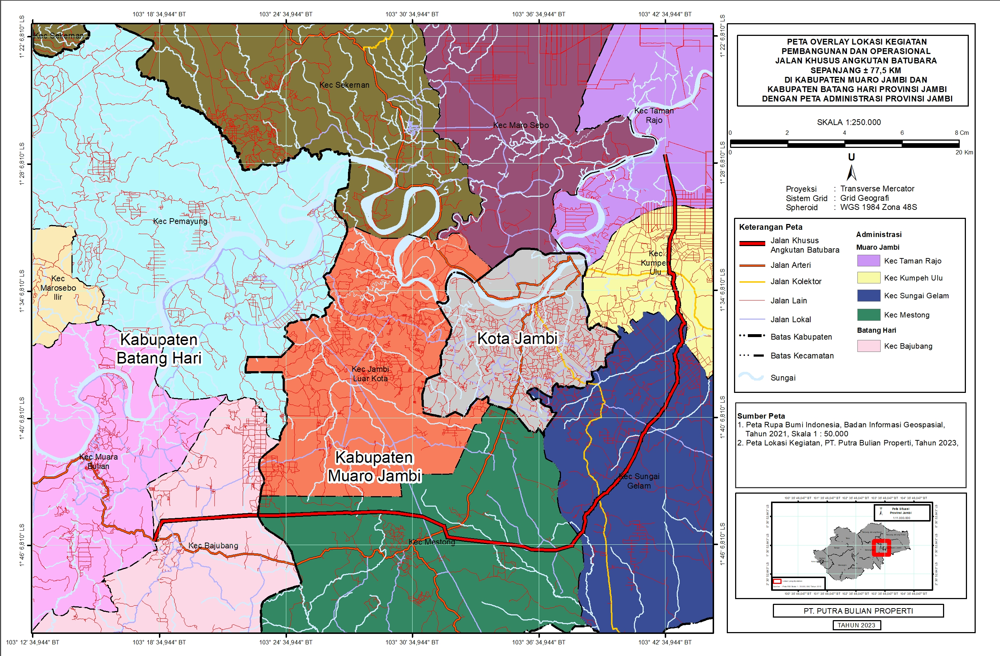
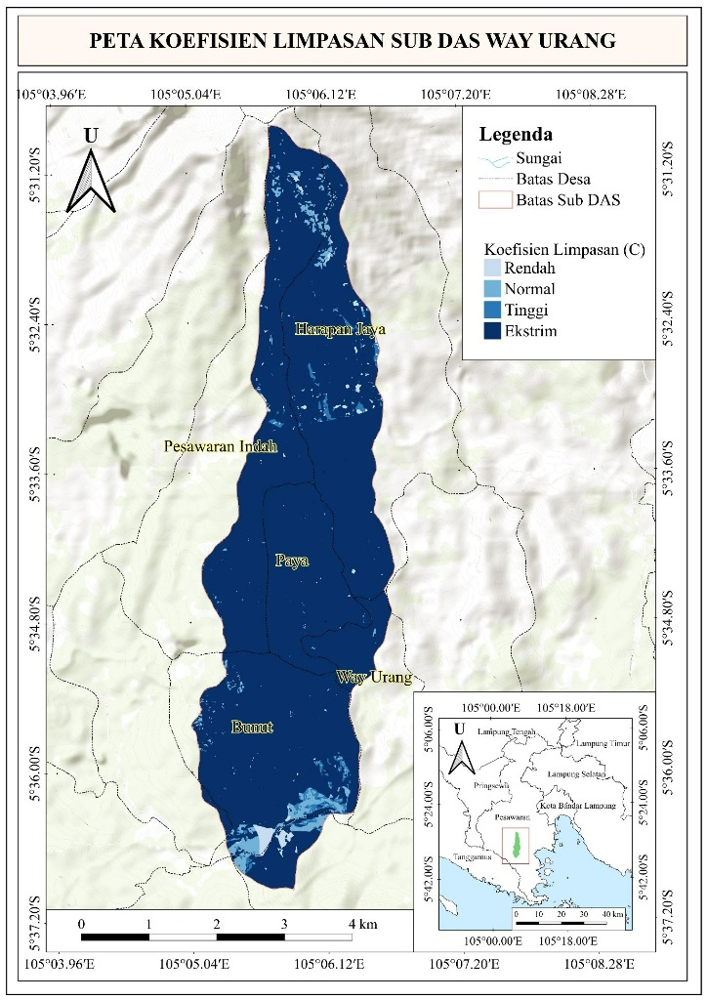
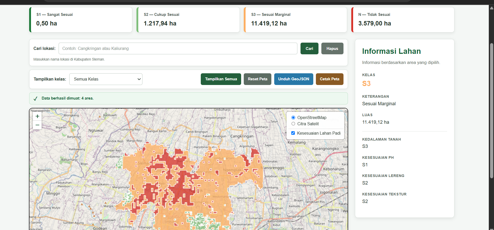

Anissa Zuhrita
GIS & Remote Sensing Specialist | Hydrologist
01. Pendidikan dan Sertifikasi
01. Education and Certification
Profil Profesional
Professional Profile
Spesialis GIS dan Penginderaan Jauh dengan pengalaman profesional mendukung 40+ proyek lingkungan dan pembangunan melalui analisis spasial, kajian lingkungan, integrasi data, survei lapangan, dan penyusunan dokumen teknis. Berpengalaman mendukung penyusunan AMDAL, UKL-UPL, DELH, kajian rona lingkungan awal, serta analisis spasial untuk proyek infrastruktur, perkebunan, perumahan, dan minyak dan gas.
Meraih gelar Magister Penginderaan Jauh dari Universitas Gadjah Mada, dengan pengalaman riset dan analisis yang mencakup karbon dan biomassa, variabilitas iklim, pemodelan hidrologi, serta pemantauan lingkungan berbasis penginderaan jauh. Terbiasa mengintegrasikan citra satelit, data lapangan, dataset lingkungan, dan data iklim menjadi analisis spasial dan kuantitatif menggunakan Google Earth Engine, QGIS, ArcGIS, dan Python.
Memiliki pengalaman dalam komunikasi teknis dan capacity building, termasuk sebagai pembicara undangan pada pelatihan online serta presenter dalam forum akademik bidang lingkungan dan penginderaan jauh.
Environmental GIS and Remote Sensing Specialist with professional experience supporting 40+ environmental and development projects through GIS analysis, environmental assessment, spatial data integration, field surveys, and technical documentation. Experienced in AMDAL, UKL-UPL, DELH, environmental baseline assessment, and spatial analysis across infrastructure, plantation, housing, and oil & gas projects.
Holds an MSc in Remote Sensing from Universitas Gadjah Mada, with research experience spanning carbon and biomass assessment, climate variability, hydrological modelling, and satellite-based environmental monitoring. Experienced in integrating satellite imagery, field observations, environmental datasets, and climate records into quantitative and spatial analyses using Google Earth Engine, QGIS, ArcGIS, and Python.
Brings additional experience in technical communication and capacity building, including invited speaking at international online training and presenting environmental and remote sensing research in academic forums.
Universitas Gadjah Mada
Magister (M.Sc) Penginderaan Jauh
Master of Science (M.Sc) in Remote Sensing
Universitas Negeri Padang
Sarjana Sains Geografi
Bachelor of Science in Geography
SMA Negeri 1 Kota Jambi
Matematika dan Ilmu Alam
Mathematics and Natural Sciences
- Pemakalah — The 7th International Conference of Geography and Disaster Management (ICGDM 2025).
- Pemakalah — National Geography Seminar VI (2025).
- Pembicara Undangan — GE-ONIT / EAGE Online Training (2026).
- Presenter — The 7th International Conference of Geography and Disaster Management (ICGDM 2025).
- Presenter — National Geography Seminar VI (2025).
- Invited Speaker — GE-ONIT / EAGE Online Training (2026).
02. GIS Analyst at Environmental Consulting
02. GIS Analyst at Environmental Consulting
PT Anugrah Agung Nusantara
Selama bekerja di konsultan lingkungan, saya mendukung 40+ proyek lingkungan dan pembangunan dari berbagai sektor, termasuk infrastruktur, perkebunan, perumahan, serta minyak dan gas. Peran saya mencakup pengolahan dan integrasi data spasial, analisis lingkungan, penyusunan peta teknis, survei lapangan, serta dukungan GIS untuk dokumen AMDAL, UKL-UPL, DELH, dan kajian teknis lingkungan.
While working at the environmental consultancy, I supported 40+ environmental and development projects across various sectors, including infrastructure, plantations, housing, and oil and gas. My roles included spatial data processing and integration, environmental analysis, technical mapping, field surveys, and GIS support for AMDAL, UKL-UPL, DELH, and technical environmental studies.
Studi Kasus Proyek
Project Case Study
AMDAL Pembangunan dan Operasional Jalan Khusus Angkutan Batubara
AMDAL Construction and Operation of Special Coal-Haulage Road

Konteks Proyek
Project Context
Penyusunan AMDAL untuk rencana pembangunan dan operasional jalan khusus angkutan batubara sepanjang ±77,5 km yang melintasi Kabupaten Muaro Jambi dan Kabupaten Batang Hari. Rencana jalan menghubungkan wilayah Taman Rajo – Kumpeh Ulu – Sungai Gelam – Mestong – Bajubang.
Proyek ini dilatarbelakangi oleh kebutuhan untuk menata sistem pengangkutan batubara di Provinsi Jambi, terutama untuk mengurangi persoalan yang timbul dari penggunaan jalan umum, seperti kemacetan, kerusakan jalan, dan risiko kecelakaan lalu lintas. Karena itu, proyek ini tidak hanya merupakan pembangunan infrastruktur transportasi, tetapi juga berkaitan dengan penataan aktivitas angkutan batubara dan pengelolaan dampak lingkungan di tingkat daerah.
Preparation of the AMDAL for the planned construction and operation of a special coal-haulage road spanning ±77.5 km crossing Muaro Jambi and Batang Hari Regencies. The planned road connects Taman Rajo – Kumpeh Ulu – Sungai Gelam – Mestong – Bajubang.
This project was driven by the need to regulate the coal transport system in Jambi Province, particularly to reduce problems arising from the use of public roads, such as traffic jams, road damage, and the risk of traffic accidents. Therefore, this project is not only about transport infrastructure development but also relates to regulating coal transport activities and managing environmental impacts at the regional level.
Konteks Kebijakan & Kerangka Regulasi
Policy Context & Regulatory Framework
Rencana pembangunan jalan khusus ini tidak berdiri sendiri. Kegiatan tersebut berada dalam kerangka kebijakan daerah mengenai pengangkutan batubara, penyelenggaraan jalan khusus, serta ketentuan perlindungan dan pengelolaan lingkungan hidup.
This special road construction plan does not stand alone. The activity falls within the framework of regional policies regarding coal transport, the organization of special roads, and provisions for environmental protection and management.
- Peraturan Daerah Provinsi Jambi No. 13 Tahun 2012: tentang Pengaturan Pengangkutan Batubara dalam Provinsi Jambi. Menjadi salah satu dasar pengaturan aktivitas pengangkutan batubara di Provinsi Jambi dan konteks munculnya kebutuhan penataan jalur angkutan batubara.
- Peraturan Daerah Provinsi Jambi No. 1 Tahun 2015: tentang Penyelenggaraan Jalan Khusus. Mengatur penyelenggaraan jalan khusus, termasuk pembangunan jalan khusus yang melintasi lebih dari satu kabupaten/kota dan persyaratan perizinannya.
- Peraturan Menteri LHK No. 4 Tahun 2021: Menjadi acuan dalam menentukan jenis dan skala kegiatan yang wajib memiliki AMDAL, UKL-UPL, atau SPPL, termasuk pembangunan jalan dengan kriteria tertentu.
- Peraturan Pemerintah No. 22 Tahun 2021: tentang Penyelenggaraan Perlindungan dan Pengelolaan Lingkungan Hidup. Menjadi kerangka utama penyelenggaraan perlindungan dan pengelolaan lingkungan hidup, termasuk AMDAL dan persetujuan lingkungan.
- Jambi Province Regional Regulation No. 13 of 2012: concerning Coal Transport Regulation in Jambi Province. Serves as one of the bases for regulating coal transport activities and the context for the need to organize transport routes.
- Jambi Province Regional Regulation No. 1 of 2015: concerning the Organization of Special Roads. Regulates special roads, including those crossing more than one regency/city and their permitting requirements.
- MoEF Regulation No. 4 of 2021: Serves as a reference in determining the type and scale of activities requiring AMDAL, UKL-UPL, or SPPL, including road construction with specific criteria.
- Government Regulation No. 22 of 2021: concerning the Implementation of Environmental Protection and Management. The main framework for environmental protection and management, including AMDAL and environmental approvals.
Dari Kebijakan Menjadi Kajian Lingkungan
From Policy to Environmental Study
Rangkaian kebijakan tersebut kemudian diterjemahkan ke dalam kebutuhan untuk melakukan kajian lingkungan terhadap rencana kegiatan. Dalam proses AMDAL, hubungan tersebut dapat digambarkan secara sederhana:
This series of policies was then translated into the need to conduct an environmental study of the planned activities. In the AMDAL process, this relationship can be simply illustrated as:
Di dalam proses tersebut, GIS menjadi salah satu alat untuk menghubungkan rencana kegiatan dengan kondisi ruang dan lingkungan di wilayah studi.
In this process, GIS becomes a tool to connect planned activities with spatial and environmental conditions in the study area.
Peran Saya sebagai Tenaga Ahli GIS/Pemetaan
My Role as GIS/Mapping Expert
Sebagai bagian dari tim penyusun AMDAL, saya bertanggung jawab menyiapkan informasi dan analisis spasial yang digunakan untuk mendukung kajian.
As part of the AMDAL preparation team, I was responsible for providing spatial information and analysis used to support the study.
- 01 — Menentukan Wilayah Studi: Menyusun peta administrasi lintas Kabupaten Muaro Jambi dan Kabupaten Batang Hari serta melakukan overlay dengan trase kegiatan untuk membantu menetapkan delineasi wilayah studi dan cakupan analisis.
- 02 — Memetakan Kondisi Lingkungan: Mengintegrasikan berbagai data spasial yang relevan dengan karakteristik wilayah, meliputi: KHG · Kedalaman Gambut · PIPPIB · Tutupan Lahan · Topografi · Hidrologi · Tata Ruang · Infrastruktur · Titik Sampling. Data tersebut digunakan untuk membangun gambaran mengenai kondisi lingkungan di sepanjang koridor kegiatan.
- 03 — Melakukan Spatial Overlay: Melakukan overlay berbagai parameter lingkungan dengan trase jalan sepanjang ±77,5 km untuk melihat hubungan antara rencana kegiatan dengan karakteristik ruang dan lingkungan di sepanjang koridor. Pendekatan ini membantu mengidentifikasi bagian wilayah yang memiliki karakteristik dan sensitivitas lingkungan berbeda.
- 04 — Mendukung Rona Lingkungan: Memetakan lokasi pengambilan sampel dan menghubungkannya dengan informasi spasial lainnya untuk mendukung penyusunan rona lingkungan awal sebagai dasar analisis dampak.
- 01 — Determining the Study Area: Preparing cross-regency administrative maps for Muaro Jambi and Batang Hari and overlaying the activity alignment to help determine the study area delineation and analysis scope.
- 02 — Mapping Environmental Conditions: Integrating spatial data relevant to regional characteristics, including: KHG (Peatland Hydrological Unit) · Peat Depth · PIPPIB · Land Cover · Topography · Hydrology · Spatial Planning · Infrastructure · Sampling Points. This data builds a picture of environmental conditions along the activity corridor.
- 03 — Performing Spatial Overlay: Overlaying environmental parameters with the ±77.5 km road alignment to see the relationship between planned activities and spatial/environmental characteristics along the corridor. This identifies areas with different environmental sensitivities.
- 04 — Supporting Environmental Baseline: Mapping sampling locations and connecting them with other spatial information to support the preparation of the initial environmental baseline as a basis for impact analysis.
Nilai Pengalaman Ini bagi Pekerjaan Selanjutnya
Value of This Experience for Future Work
Pengalaman ini memberikan saya pemahaman bahwa analisis lingkungan tidak cukup hanya melihat apa kegiatannya, tetapi juga perlu memahami: Di mana kegiatan berlangsung? Apa yang berada di sekitarnya? Apa yang sensitif? Bagaimana aktivitas tersebut berinteraksi dengan kondisi lingkungan?
Kemampuan untuk menghubungkan konteks kebijakan, aktivitas pembangunan, data lingkungan, dan analisis spasial menjadi fondasi yang dapat saya terapkan pada pekerjaan yang lebih luas, termasuk environmental planning, climate action, dan penyusunan strategi berbasis data.
This experience gave me the understanding that environmental analysis is not enough just by looking at what the activity is, but also needs to understand: Where does the activity take place? What is around it? What is sensitive? How does the activity interact with environmental conditions?
The ability to connect policy contexts, development activities, environmental data, and spatial analysis serves as a foundation that I can apply to broader work, including environmental planning, climate action, and data-driven strategy development.
03. Survei Biomassa Mangrove
03. Mangrove Biomass Survey

Estimasi Aboveground Biomass (AGB) untuk Mendukung Analisis Karbon Ekosistem
Aboveground Biomass (AGB) Estimation to Support Ecosystem Carbon Analysis
Tentang Proyek
About the Project
Kegiatan ini merupakan bagian dari kegiatan penelitian lapangan mengenai estimasi dan pemetaan Aboveground Biomass (AGB) ekosistem mangrove menggunakan data penginderaan jauh. Mangrove merupakan salah satu ekosistem penting dalam mitigasi perubahan iklim karena memiliki kemampuan menyimpan karbon dalam biomassa dan ekosistemnya. Oleh karena itu, informasi mengenai biomassa menjadi dasar penting untuk memahami potensi penyimpanan karbon dan kondisi ekosistem mangrove.
This activity is part of field research regarding the estimation and mapping of Aboveground Biomass (AGB) in mangrove ecosystems using remote sensing data. Mangroves are key ecosystems in climate change mitigation due to their ability to store carbon in their biomass and ecosystems. Therefore, biomass information is a crucial basis for understanding carbon storage potential and mangrove ecosystem conditions.
Tujuan
Objectives
- Mengestimasi dan memetakan Aboveground Biomass (AGB) menggunakan citra Sentinel-2.
- Menganalisis hubungan AGB dengan parameter biofisik mangrove, termasuk kerapatan kanopi, Leaf Area Index (LAI), dan tinggi kanopi menggunakan data Sentinel-1 dan Sentinel-2.
- Mengidentifikasi parameter biofisik yang paling berhubungan dengan AGB sebagai informasi pendukung pengelolaan dan konservasi mangrove.
- Estimate and map Aboveground Biomass (AGB) using Sentinel-2 imagery.
- Analyze the relationship between AGB and mangrove biophysical parameters, including canopy density, Leaf Area Index (LAI), and canopy height using Sentinel-1 and Sentinel-2 data.
- Identify the biophysical parameters most related to AGB as supporting information for mangrove management and conservation.
Kontribusi Lapangan Saya
My Field Contribution
Saya terlibat langsung dalam survei biomassa mangrove berbasis non-destructive sampling untuk memperoleh data biofisik yang digunakan sebagai informasi referensi dalam analisis penginderaan jauh. Kegiatan lapangan meliputi:
I was directly involved in the mangrove biomass survey based on non-destructive sampling to obtain biophysical data used as reference information in remote sensing analysis. Field activities included:
- Pengukuran biomassa: Melakukan pengukuran parameter pohon, terutama diameter batang (DBH) dan tinggi kanopi, sebagai bagian dari estimasi biomassa atas permukaan.
- Spatial data collection: Menentukan koordinat setiap plot pengukuran menggunakan GNSS handheld receiver untuk menghubungkan data lapangan dengan informasi citra satelit.
- Vegetation assessment: Mengidentifikasi spesies mangrove dan mencatat karakteristik vegetasi pada plot pengamatan.
- Field validation: Mengumpulkan data biofisik lapangan yang dapat digunakan untuk mendukung analisis dan validasi estimasi biomassa berbasis citra satelit.
- Biomass measurement: Measuring tree parameters, specifically stem diameter (DBH) and canopy height, as part of aboveground biomass estimation.
- Spatial data collection: Determining the coordinates of each measurement plot using a GNSS handheld receiver to connect field data with satellite imagery information.
- Vegetation assessment: Identifying mangrove species and recording vegetation characteristics in observation plots.
- Field validation: Collecting field biophysical data usable to support analysis and validation of satellite-based biomass estimation.
Berbeda dari sekadar melakukan analisis citra satelit, kegiatan ini memberi saya pengalaman memahami bagaimana data lapangan diperoleh dan digunakan sebagai dasar dalam estimasi biomassa berbasis penginderaan jauh. Pengalaman tersebut menjadi salah satu fondasi pemahaman saya terhadap pendekatan spatial monitoring of biomass and carbon-related environmental indicators.
Different from merely conducting satellite imagery analysis, this activity gave me experience in understanding how field data is obtained and used as a basis in remote sensing-based biomass estimation. This experience became one of the foundations for my understanding of spatial monitoring of biomass and carbon-related environmental indicators.
04. Penelitian Dinamika Iklim Regional
04. Regional Climate Dynamics Research
Menganalisis Pengaruh ENSO terhadap Variabilitas Curah Hujan di Sulawesi Tengah
Analyzing the Influence of ENSO on Rainfall Variability in Central Sulawesi
Tentang Studi
About the Study
Penelitian ini menganalisis hubungan antara El Niño–Southern Oscillation (ENSO) dan variabilitas curah hujan di Sulawesi Tengah menggunakan data jangka panjang selama 1991–2024. ENSO merupakan salah satu faktor iklim global yang dapat memengaruhi pola curah hujan di Indonesia. Perubahan tersebut dapat berimplikasi pada risiko kekeringan, banjir, dan bencana hidrometeorologi, sehingga pemahaman mengenai hubungan ENSO dan curah hujan penting dalam mendukung perencanaan adaptasi terhadap variabilitas dan perubahan iklim.
This research analyzes the relationship between El Niño–Southern Oscillation (ENSO) and rainfall variability in Central Sulawesi using long-term data over 1991–2024. ENSO is a global climate factor affecting rainfall patterns in Indonesia. These changes can imply risks of drought, floods, and hydrometeorological disasters, thus understanding the relationship between ENSO and rainfall is important in supporting adaptation planning for climate variability and change.
Pertanyaan yang Dikaji
Research Question
Seberapa besar ENSO memengaruhi variabilitas curah hujan di Sulawesi Tengah, dan apakah pengaruh tersebut sama di setiap wilayah? Untuk menjawabnya, analisis dilakukan pada empat stasiun meteorologi: Luwuk · Poso · Toli-Toli · Palu.
How much does ENSO influence rainfall variability in Central Sulawesi, and is the influence the same in every region? To answer this, analysis was conducted at four meteorological stations: Luwuk · Poso · Toli-Toli · Palu.
Data & Pendekatan Analisis
Data & Analytical Approach
- Curah Hujan: Data observasi stasiun meteorologi BMKG.
- ENSO: Oceanic Niño Index (ONI) dari Climate Prediction Center (CPC).
- Rainfall: Observational data from BMKG meteorological stations.
- ENSO: Oceanic Niño Index (ONI) from the Climate Prediction Center (CPC).
Data ONI dan curah hujan dianalisis pada skala tiga bulanan untuk mengevaluasi hubungan keduanya menggunakan: Pearson Correlation, Coefficient of Determination (R²), dan Statistical Significance Test (t-test). Analisis kemudian diperluas berdasarkan intensitas El Niño dan La Niña, sehingga tidak hanya melihat apakah ENSO berpengaruh, tetapi juga bagaimana respons curah hujan berubah berdasarkan kekuatan kejadian.
ONI and rainfall data were analyzed on a three-monthly scale to evaluate their relationship using: Pearson Correlation, Coefficient of Determination (R²), and Statistical Significance Test (t-test). The analysis was then expanded based on El Niño and La Niña intensities, thereby not only seeing if ENSO has an effect, but also how the rainfall response changes based on event strength.
Temuan Utama
Key Findings
Hasil penelitian menunjukkan bahwa pengaruh ENSO terhadap curah hujan berbeda secara spasial di Sulawesi Tengah. Secara umum, El Niño cenderung menurunkan curah hujan, sedangkan La Niña cenderung meningkatkan curah hujan. Namun, kekuatan pengaruhnya berbeda antarwilayah.
Research results indicate that the influence of ENSO on rainfall differs spatially in Central Sulawesi. Generally, El Niño tends to decrease rainfall, while La Niña tends to increase it. However, the strength of the influence differs between regions.
| Stasiun | Station | Korelasi ONI–Curah Hujan | R² |
|---|---|---|---|
| Luwuk | -0,29 | 0,09 | |
| Poso | -0,14 | 0,02 | |
| Toli-Toli | -0,49 | 0,24 | |
| Palu | -0,43 | 0,19 |
Hubungan paling kuat ditemukan di Toli-Toli dan Palu, sedangkan di Luwuk dan Poso pengaruh ENSO relatif lebih lemah. Analisis berdasarkan kelas intensitas menunjukkan bahwa dampak ENSO berubah tergantung kekuatan kejadian. Salah satu temuan paling jelas terlihat di Palu saat El Niño Kuat, dengan korelasi -0,45 dan R² sekitar 0,20. Artinya, tidak semua wilayah dapat diperlakukan dengan pendekatan iklim yang sama.
The strongest relationships were found in Toli-Toli and Palu, while in Luwuk and Poso the ENSO influence was relatively weaker. Analysis based on intensity classes showed that ENSO impacts change depending on event strength. One of the clearest findings was seen in Palu during Strong El Niño, with a correlation of -0.45 and R² around 0.20. Meaning, not all regions can be treated with the same climate approach.
Apa yang Saya Kerjakan
What I Did
- Mengolah data curah hujan jangka panjang dan menggunakan indikator ONI.
- Menghitung anomali curah hujan, korelasi Pearson, dan koefisien determinasi.
- Melakukan uji signifikansi statistik (t-test) dan mengklasifikasikan intensitas ENSO.
- Membandingkan respons curah hujan antarwilayah secara spasial.
- Processed long-term rainfall data and utilized ONI indicators.
- Calculated rainfall anomalies, Pearson correlation, and coefficient of determination.
- Conducted statistical significance tests (t-test) and classified ENSO intensity.
- Compared rainfall responses spatially across regions.
05. Pemodelan Hidrologi & Mitigasi Risiko Bencana DAS
05. Hydrological Modelling & Watershed Disaster Risk Mitigation

Analisis Potensi Banjir Berbasis GIS, Remote Sensing, dan Data Lapangan
Flood Potential Analysis Based on GIS, Remote Sensing, and Field Data
Tentang Proyek
About the Project
Penelitian ini mengembangkan pendekatan untuk menilai potensi banjir berdasarkan hubungan antara karakteristik fisik DAS, curah hujan, dan kapasitas sungai. Analisis dilakukan pada Way Urang Sub-Watershed seluas sekitar 20,2 km² dengan mengintegrasikan: Remote sensing → GIS → data curah hujan → survei lapangan → hydrological analysis.
Tujuannya bukan hanya menghitung debit puncak, tetapi memahami mengapa suatu wilayah menghasilkan limpasan tinggi dan bagian mana yang memiliki kerentanan lebih besar terhadap banjir.
This research developed an approach to assess flood potential based on the relationship between physical watershed characteristics, rainfall, and river capacity. The analysis was conducted on the Way Urang Sub-Watershed covering approximately 20.2 km² by integrating: Remote sensing → GIS → rainfall data → field surveys → hydrological analysis.
The goal was not just calculating peak discharge, but understanding why an area generates high runoff and which parts have greater vulnerability to flooding.
Pertanyaan yang Dikaji
Research Question
Bagaimana karakteristik fisik DAS dan intensitas hujan memengaruhi limpasan, dan apakah kapasitas sungai mampu menampung debit puncak yang dihasilkan? Untuk menjawab pertanyaan tersebut, penelitian menghubungkan beberapa komponen utama:
How do physical watershed characteristics and rainfall intensity affect runoff, and is the river capacity able to accommodate the generated peak discharge? To answer this question, the research connected several key components:
Data yang Digunakan
Data Used
- Remote Sensing: Sentinel-2 Level-2A. Digunakan untuk memperoleh NDVI dan mengestimasi kelas kerapatan vegetasi.
- Topografi: DEMNAS. Digunakan untuk memperoleh: slope; jaringan sungai; panjang saluran; dan drainage density.
- Data Hidrometeorologi: Data curah hujan harian periode 2014–2023 digunakan untuk menghitung intensitas hujan yang menjadi salah satu komponen estimasi debit puncak.
- Data Lapangan: Survei dilakukan untuk memperoleh: kerapatan kanopi; laju infiltrasi tanah; penampang sungai; kedalaman sungai; dan kondisi lapangan terkait kejadian banjir.
- Remote Sensing: Sentinel-2 Level-2A. Used to derive NDVI and estimate vegetation density classes.
- Topography: DEMNAS. Used to derive: slope; river networks; channel length; and drainage density.
- Hydrometeorological Data: Daily rainfall data for the 2014–2023 period used to calculate rainfall intensity as a component for peak discharge estimation.
- Field Data: Surveys conducted to obtain: canopy density; soil infiltration rates; river cross-sections; river depth; and field conditions related to flood events.
Pendekatan Analisis
Analytical Approach
- 01 — Memetakan Karakteristik Fisik DAS: Karakteristik yang memengaruhi pembentukan limpasan dipetakan menggunakan GIS dan remote sensing. Parameter utama meliputi: Slope · Vegetation Density · Soil Infiltration · Drainage Density. Keempat parameter tersebut kemudian dioverlay untuk membentuk spatial mapping units.
- 02 — Menghubungkan Citra Satelit dengan Data Lapangan: NDVI dari Sentinel-2 tidak langsung digunakan sebagai representasi kerapatan vegetasi. Data tersebut terlebih dahulu dikalibrasi menggunakan hasil pengukuran lapangan pada 25 lokasi sampling. Hubungan antara NDVI dan kerapatan kanopi menghasilkan: R² = 0,8196. Pendekatan ini memungkinkan informasi dari citra satelit dikaitkan dengan kondisi vegetasi aktual di lapangan.
- 03 — Membentuk Peta Runoff Coefficient: Parameter slope, vegetation density, infiltration capacity, dan drainage density dikombinasikan menggunakan pendekatan Cook Method. Hasilnya berupa peta spasial runoff coefficient, yaitu estimasi proporsi curah hujan yang berpotensi berubah menjadi limpasan permukaan. Nilai rata-rata runoff coefficient sub-DAS mencapai: 69,20%.
- 04 — Mengestimasi Debit Puncak: Runoff coefficient kemudian dikombinasikan dengan intensitas hujan; luas DAS; dan karakteristik waktu konsentrasi. Dengan Rational Method, diperoleh estimasi: Peak Discharge = 217,19 m³/s.
- 05 — Membandingkan dengan Kapasitas Sungai: Estimasi debit puncak kemudian dibandingkan dengan kapasitas saluran berdasarkan survei morfometri sungai. Hasil pengukuran menunjukkan: Luas penampang sungai: 27,91 m². Estimasi bankfull discharge: ±9,53 m³/s.
- 01 — Mapping Watershed Physical Characteristics: Characteristics affecting runoff generation were mapped using GIS and remote sensing. Key parameters include: Slope · Vegetation Density · Soil Infiltration · Drainage Density. These four parameters were overlaid to form spatial mapping units.
- 02 — Connecting Satellite Imagery with Field Data: Sentinel-2 NDVI wasn't used directly as a vegetation density proxy. It was first calibrated using field measurements from 25 sampling locations. The relationship between NDVI and canopy density yielded: R² = 0.8196. This approach linked satellite imagery info to actual field vegetation conditions.
- 03 — Forming the Runoff Coefficient Map: Slope, vegetation density, infiltration capacity, and drainage density were combined using the Cook Method. The result was a spatial runoff coefficient map, estimating the proportion of rainfall likely to become surface runoff. The sub-watershed's average runoff coefficient reached 69.20%.
- 04 — Estimating Peak Discharge: The runoff coefficient was combined with rainfall intensity, watershed area, and time of concentration characteristics. Using the Rational Method, the estimate was: Peak Discharge = 217.19 m³/s.
- 05 — Comparing with River Capacity: Peak discharge estimates were compared with channel capacity based on river morphometric surveys. Measurements showed: River cross-sectional area: 27.91 m². Estimated bankfull discharge: ±9.53 m³/s.
Temuan Utama
Key Findings
Analisis menunjukkan bahwa potensi limpasan tinggi terutama berkaitan dengan kombinasi: Kemiringan lereng tinggi + kapasitas infiltrasi tanah rendah + curah hujan tinggi. Kondisi tersebut meningkatkan jumlah air yang bergerak sebagai surface runoff dan berkontribusi terhadap peningkatan debit puncak.
Ketidakseimbangan antara Peak discharge ≈ 217,19 m³/s dan Bankfull capacity ≈ 9,53 m³/s menunjukkan potensi overbank flow yang tinggi, terutama pada wilayah hilir seperti Desa Bunut. Temuan spasial tersebut juga konsisten dengan informasi lapangan bahwa banjir terjadi secara berulang di wilayah hilir.
The analysis shows that high runoff potential is primarily related to a combination of: Steep slopes + low soil infiltration capacity + high rainfall. These conditions increase the volume of water moving as surface runoff and contribute to increased peak discharge.
The imbalance between Peak discharge ≈ 217.19 m³/s and Bankfull capacity ≈ 9.53 m³/s indicates a high potential for overbank flow, especially in downstream areas like Desa Bunut. This spatial finding is also consistent with field information regarding recurrent downstream flooding.
Apa yang Saya Kerjakan
What I Did
Dalam penelitian ini saya terlibat dalam proses yang menghubungkan spatial analysis, environmental modelling, dan field validation, termasuk: pengolahan Sentinel-2 dan ekstraksi NDVI; pengolahan DEMNAS untuk topografi dan jaringan drainase; integrasi data curah hujan; pengolahan data survei vegetasi; analisis infiltrasi tanah; spatial overlay untuk pemodelan runoff coefficient; estimasi debit puncak menggunakan Rational Method; analisis kapasitas saluran menggunakan data morfometri lapangan; dan interpretasi hubungan antara karakteristik DAS, limpasan, dan potensi banjir.
In this research I was involved in processes connecting spatial analysis, environmental modelling, and field validation, including: Sentinel-2 processing and NDVI extraction; DEMNAS processing for topography and drainage networks; rainfall data integration; vegetation survey data processing; soil infiltration analysis; spatial overlay for runoff coefficient modelling; peak discharge estimation using the Rational Method; channel capacity analysis using field morphometric data; and interpretation of relationships between watershed characteristics, runoff, and flood potential.
06. Remote Sensing & Data Analytics Research
06. Remote Sensing & Data Analytics Research
Tesis: Studi Komparasi Kinerja Estimasi Debit Sungai Menggunakan Metode Calibration Measurement Hierarchical Classification (CMHC) Berbasis Citra Sentinel-2
Thesis: Comparative Study of River Discharge Estimation Performance Using Sentinel-2-Based Calibration Measurement Hierarchical Classification (CMHC)
- Mengembangkan pendekatan estimasi debit sungai berbasis piksel menggunakan citra Sentinel-2 multitemporal.
- Menerapkan metode CMHC untuk menghubungkan variabilitas spektral citra satelit dengan dinamika debit sungai hasil observasi.
- Melakukan pemrosesan citra Sentinel-2 pada Google Earth Engine (GEE) yang mencakup cloud masking, ekstraksi area kajian (ROI), serta pembuatan fitur spektral.
- Menerapkan algoritma Random Forest untuk klasifikasi debit sungai.
- Menggunakan Python untuk mendukung prapemrosesan data, penentuan ambang kelas, analisis statistik, dan validasi model.
- Mengevaluasi kinerja model menggunakan berbagai metrik statistik serta menganalisis pengaruh karakteristik morfologi sungai, khususnya efek pencampuran piksel (pixel mixing) terkait lebar sungai.
- Developed a pixel-based river discharge estimation approach using multitemporal Sentinel-2 imagery.
- Applied the CMHC method to connect satellite imagery spectral variability with observed river discharge dynamics.
- Processed Sentinel-2 imagery on Google Earth Engine (GEE), including cloud masking, study area extraction (ROI), and spectral feature generation.
- Applied the Random Forest algorithm for river discharge classification.
- Used Python to support data preprocessing, class threshold determination, statistical analysis, and model validation.
- Evaluated model performance using various statistical metrics and analyzed the influence of river morphology characteristics, especially the effect of pixel mixing related to river width.
Pertanyaan Utama
Main Question
Seberapa baik CMHC berbasis Sentinel-2 dapat mengestimasi debit pada sungai dengan karakteristik morfologi yang berbeda, dan apakah pemisahan musim dapat meningkatkan kinerja model?
Untuk menjawabnya, saya membandingkan tiga segmen sungai di Daerah Istimewa Yogyakarta: Sungai Progo (Lebar ±85 m), Sungai Oyo (Lebar ±35 m), Sungai Serang (Lebar ±30 m). Ketiganya memberikan kondisi yang berbeda untuk menguji keterbatasan dan kemampuan metode berbasis citra optik.
How well can Sentinel-2-based CMHC estimate discharge in rivers with different morphological characteristics, and can seasonal separation improve model performance?
To answer this, I compared three river segments in the Special Region of Yogyakarta: Progo River (Width ±85 m), Oyo River (Width ±35 m), Serang River (Width ±30 m). The three provided different conditions to test the limitations and capabilities of optical imagery-based methods.
Menguji Pengaruh Musim
Testing Seasonal Effects
Salah satu pertanyaan utama penelitian adalah apakah kondisi musim memengaruhi hubungan antara respon spektral citra dan debit sungai. Karena itu, model diuji dalam tiga skenario:
One of the main research questions was whether seasonal conditions affect the relationship between image spectral response and river discharge. Therefore, models were tested in three scenarios:
- Tanpa pemisahan musim: Satu model menggunakan seluruh kondisi pengamatan.
- Musim hujan: Model dilatih menggunakan data musim hujan.
- Musim kemarau: Model dilatih menggunakan data musim kemarau.
- Without seasonal separation: One model using all observation conditions.
- Wet season: Model trained using wet season data.
- Dry season: Model trained using dry season data.
- Dry season: Model trained using dry season data.
Seluruh skenario kemudian dievaluasi menggunakan data uji independen periode 2022–2024. Kinerja model dinilai menggunakan: RMSE (besarnya kesalahan estimasi), rRMSE (kesalahan relatif terhadap skala debit), dan NSE (kemampuan model mereproduksi variasi temporal debit).
All scenarios were then evaluated using independent test data for the 2022–2024 period. Model performance was assessed using: RMSE (estimation error magnitude), rRMSE (relative error to discharge scale), and NSE (the model's ability to reproduce temporal discharge variation).
Hasil Utama
Main Results
Sungai Progo — Kinerja Paling Stabil. Sungai Progo, dengan lebar saluran sekitar 85 m, menunjukkan kinerja terbaik. Pada skenario tanpa pemisahan musim: NSE = 0,64 | RMSE = 20,08 m³/s | rRMSE = 41,74%.
Nilai NSE positif menunjukkan bahwa model mampu mereproduksi variasi temporal debit dengan cukup baik. Model juga mampu mengikuti sebagian besar pola kenaikan dan penurunan debit, meskipun masih menunjukkan kecenderungan underestimation pada debit puncak.
Yang menarik, pemisahan musim justru menurunkan performa model: Musim hujan → NSE −0,23, Musim kemarau → NSE −2,22. Artinya, pada Sungai Progo, pemisahan musim tidak memberikan keuntungan dibandingkan penggunaan seluruh variasi kondisi debit dalam satu model.
Sungai Oyo & Serang — Keterbatasan Spatial Resolution. Kondisinya berbeda pada Sungai Oyo dan Sungai Serang. Sungai Oyo (Lebar saluran ±35 m), Kinerja terbaik: NSE = −0,04, rRMSE = 242,87%. Sungai Serang (Lebar saluran ±30 m), Kinerja terbaik: NSE = −0,37, rRMSE = 104,82%. Secara umum, kedua sungai menghasilkan NSE negatif pada seluruh skenario, menunjukkan bahwa model belum mampu mereproduksi dinamika debit secara memadai.
Progo River — Most Stable Performance. Progo River, with a channel width around 85 m, showed the best performance. In the scenario without seasonal separation: NSE = 0.64 | RMSE = 20.08 m³/s | rRMSE = 41.74%.
A positive NSE value indicates the model can reproduce temporal discharge variations quite well. The model could also follow most discharge rise and fall patterns, although still showing an underestimation tendency at peak discharge.
Interestingly, seasonal separation actually decreased model performance: Wet season → NSE −0.23, Dry season → NSE −2.22. Meaning, for the Progo River, seasonal separation offers no advantage compared to using all discharge condition variations in a single model.
Oyo & Serang Rivers — Spatial Resolution Limitations. Conditions were different for the Oyo and Serang Rivers. Oyo River (Channel width ±35 m), Best performance: NSE = −0.04, rRMSE = 242.87%. Serang River (Channel width ±30 m), Best performance: NSE = −0.37, rRMSE = 104.82%. Generally, both rivers yielded negative NSEs across all scenarios, indicating the model cannot adequately reproduce discharge dynamics.
Mengapa Performanya Berbeda?
Why Did Performance Differ?
Temuan utama penelitian justru muncul dari perbandingan ketiga sungai tersebut. Lebar Sungai Menjadi Faktor Kunci. Resolusi spasial Sentinel-2 adalah 10 m. Pada Sungai Progo yang memiliki lebar sekitar 85 m, badan air masih dapat direpresentasikan oleh sejumlah piksel yang relatif dominan terdiri atas air.
Sebaliknya, pada Sungai Oyo dan Serang yang hanya memiliki lebar sekitar 30–35 m, sebagian piksel dapat merekam campuran: Air + Vegetasi Riparian + Daratan. Kondisi ini disebut mixed pixel. Akibatnya, perubahan debit tidak selalu menghasilkan perubahan respon spektral yang cukup jelas untuk ditangkap oleh model. Dengan demikian, keterbatasan performa pada Oyo dan Serang lebih berkaitan dengan keterwakilan spasial badan air pada resolusi citra daripada sekadar perbedaan musim.
The main research finding emerged from comparing these three rivers. River Width Became the Key Factor. Sentinel-2 spatial resolution is 10 m. On the Progo River, which has a width of about 85 m, the water body can still be represented by a number of pixels predominantly composed of water.
Conversely, on the Oyo and Serang Rivers, which only have a width of about 30–35 m, some pixels might record a mixture: Water + Riparian Vegetation + Land. This condition is called mixed pixel. Consequently, discharge changes do not always produce spectral response changes clear enough to be captured by the model. Thus, performance limitations on the Oyo and Serang are more related to the spatial representation of water bodies at image resolution rather than mere seasonal differences.
Temuan Kunci Penelitian
Key Research Findings
Penelitian menunjukkan bahwa pemisahan musim tidak secara konsisten meningkatkan performa estimasi debit. Sebaliknya, faktor yang lebih menentukan adalah karakteristik morfologi dan keterwakilan badan air pada citra. Secara sederhana:
Research shows that seasonal separation does not consistently improve discharge estimation performance. Instead, a more determining factor is morphological characteristics and water body representation in imagery. Simply put:
Temuan ini menunjukkan bahwa kualitas hasil estimasi tidak hanya ditentukan oleh algoritma, tetapi juga oleh kesesuaian antara karakteristik objek di lapangan dan resolusi spasial data penginderaan jauh.
These findings indicate that estimation result quality is determined not only by algorithms, but also by the suitability between field object characteristics and remote sensing data spatial resolution.
Apa yang Saya Kerjakan
What I Did
Dalam tesis ini saya mengembangkan workflow analisis secara end-to-end, mulai dari data mentah hingga evaluasi model.
In this thesis, I developed an end-to-end analysis workflow, from raw data to model evaluation.
- Google Earth Engine: preprocessing Sentinel-2; cloud masking; ROI extraction; spectral feature generation; pengolahan data multitemporal.
- Python: preprocessing data; penentuan ambang kelas debit; pengolahan dataset; analisis statistik; model evaluation.
- Machine Learning: Random Forest untuk klasifikasi kelas debit.
- Model Evaluation: RMSE; rRMSE; NSE; analisis hidrograf; perbandingan performa antar sungai dan antar skenario.
- Spatial Interpretation: membandingkan performa model dengan lebar saluran; menganalisis pengaruh mixed pixel dan vegetasi riparian; mengevaluasi keterbatasan penerapan metode pada sungai tropis.
- Google Earth Engine: Sentinel-2 preprocessing; cloud masking; ROI extraction; spectral feature generation; multitemporal data processing.
- Python: data preprocessing; discharge class threshold determination; dataset processing; statistical analysis; model evaluation.
- Machine Learning: Random Forest for discharge class classification.
- Model Evaluation: RMSE; rRMSE; NSE; hydrograph analysis; performance comparison across rivers and scenarios.
- Spatial Interpretation: comparing model performance with channel width; analyzing mixed pixel and riparian vegetation influence; evaluating the method's application limitations on tropical rivers.
07. Spatial Decision Support: Building Platform WebGIS
07. Spatial Decision Support: Building Platform WebGIS

WebGIS Kesesuaian Lahan Sawah Irigasi
Irrigated Rice Land Suitability WebGIS
Proyek ini mengembangkan WebGIS interaktif untuk mengevaluasi kesesuaian lahan sawah irigasi di Kabupaten Sleman. Tujuan utamanya adalah mengintegrasikan berbagai karakteristik lingkungan yang memengaruhi kesesuaian lahan ke dalam satu analisis spasial, sehingga hasil akhirnya berupa peta zonasi yang menunjukkan tingkat kesesuaian setiap lokasi.
This project developed an interactive WebGIS to evaluate irrigated rice-field suitability in Sleman Regency. The main goal was to integrate various environmental characteristics affecting land suitability into a single spatial analysis, producing a zonation map showing the suitability level of each location.
Pertanyaan yang Dikaji
Research Question
Di mana lokasi yang memiliki kondisi lingkungan paling sesuai untuk pengembangan sawah irigasi? Untuk menjawab pertanyaan tersebut, saya mengintegrasikan beberapa parameter yang mewakili kondisi biofisik lahan: Land Surface Temperature, Soil pH, Soil Depth, Slope, Soil Texture.
Where are the locations possessing the most suitable environmental conditions for irrigated rice-field development? To answer this question, I integrated several parameters representing land biophysical conditions: Land Surface Temperature, Soil pH, Soil Depth, Slope, Soil Texture.
Data & Analisis
Data & Analysis
- Landsat-8: → Land Surface Temperature.
- SoilGrids & Soil Texture Dataset: → Karakteristik tekstur tanah, pH tanah, dan kedalaman tanah. Data ini berasal dari SoilGrids (https://soilgrids.org/) melalui produk data Depth to Bedrock (BDTICM) yang memprediksi jarak vertikal dari permukaan tanah hingga menyentuh lapisan batuan induk keras. Namun skalanya 250 m, sebagai masukan ke depannya diperlukan data dengan resolusi spasial yang lebih baik.
- SRTM 30 m DEM: → kemiringan lereng.
- Landsat-8: → Land Surface Temperature.
- SoilGrids & Soil Texture Dataset: → Soil texture characteristics, soil pH, and soil depth. This data originates from SoilGrids (https://soilgrids.org/) via the Depth to Bedrock (BDTICM) product predicting vertical distance from the surface to solid bedrock. However, its scale is 250 m; future inputs require better spatial resolution.
- SRTM 30 m DEM: → slope gradient.
Dataset tersebut memiliki format, resolusi, dan karakteristik yang berbeda sehingga perlu diharmonisasi terlebih dahulu sebelum dilakukan analisis spasial.
These datasets have different formats, resolutions, and characteristics, so they needed to be harmonized first prior to spatial analysis.
Workflow & Evaluasi
Workflow & Evaluation
Klasifikasi kesesuaian menggunakan pendekatan Liebig's Law of the Minimum, sehingga parameter yang paling membatasi menjadi faktor penentu kelas kesesuaian akhir. Suatu lokasi tidak dapat dikategorikan sangat sesuai hanya karena sebagian besar parameternya baik apabila terdapat satu faktor pembatas yang sangat kuat.
Suitability classification utilizes Liebig's Law of the Minimum, so the most limiting parameter determines the final suitability class. A location cannot be categorized as highly suitable just because most parameters are good if there's one very strong limiting factor.
Apa yang Saya Kerjakan
What I Did
- Mengumpulkan dan mengintegrasikan berbagai dataset lingkungan.
- Melakukan harmonisasi data spasial dan reclassification berdasarkan kriteria kesesuaian.
- Melakukan spatial overlay dan menerapkan logika limiting factor untuk menentukan kelas kesesuaian.
- Menghasilkan peta kesesuaian (S1/S2/S3/N) dan menyajikan hasil analisis dalam bentuk WebGIS interaktif.
- Collected and integrated various environmental datasets.
- Performed spatial data harmonization and reclassification based on suitability criteria.
- Performed spatial overlay and applied limiting factor logic to determine suitability classes.
- Produced suitability maps (S1/S2/S3/N) and presented the analysis in an interactive WebGIS.
08. Technical Development: Building Plugins
08. Technical Development: Building Plugins
Multi-Index Vegetation QGIS Plugin
Multi-Index Vegetation QGIS Plugin
Saya mengembangkan QGIS Processing Plugin untuk menghitung 14 indeks vegetasi dari data multispektral secara lebih praktis dan terstruktur. Daripada menghitung formula secara manual satu per satu, saya mengemas formula ilmiah tersebut menjadi satu tool analitik yang dapat digunakan langsung di QGIS.
Plugin ini dirancang agar dapat digunakan untuk berbagai sumber citra multispektral, termasuk: Sentinel-2 · Landsat · PlanetScope · UAV Multispectral.
I developed a QGIS Processing Plugin to calculate 14 vegetation indices from multispectral data more practically and structurally. Rather than calculating formulas manually one by one, I packaged those scientific formulas into a single analytical tool directly usable in QGIS.
This plugin is designed for various multispectral imagery sources, including: Sentinel-2 · Landsat · PlanetScope · UAV Multispectral.
Apa yang Bisa Dilakukan?
What Can It Do?
- Vegetation Condition & Productivity: NDVI · EVI · CIred-edge · NDRE. Untuk melihat kondisi vegetasi, kehijauan, produktivitas, dan karakteristik tajuk.
- Biomass & Soil Background: SAVI · OSAVI · WDVI · RDVI · MSR. Untuk analisis biomassa dan kondisi vegetasi dengan mempertimbangkan pengaruh latar belakang tanah.
- Chlorophyll & Nitrogen: GNDVI · CIgreen · TCARI/OSAVI. Untuk analisis yang berkaitan dengan kandungan klorofil dan status vegetasi.
- Vegetation Structure & LAI: REIP · MCARI2. Untuk analisis struktur tajuk dan parameter vegetasi seperti Leaf Area Index (LAI).
- Vegetation Condition & Productivity: NDVI · EVI · CIred-edge · NDRE. To assess vegetation condition, greenness, productivity, and canopy characteristics.
- Biomass & Soil Background: SAVI · OSAVI · WDVI · RDVI · MSR. For biomass and vegetation condition analysis considering soil background influence.
- Chlorophyll & Nitrogen: GNDVI · CIgreen · TCARI/OSAVI. For analysis related to chlorophyll content and vegetation status.
- Vegetation Structure & LAI: REIP · MCARI2. For canopy structure analysis and vegetation parameters like Leaf Area Index (LAI).
Fitur Utama
Main Features
- Dynamic Band Mapping: Pengguna dapat memetakan band input sesuai kebutuhan indeks yang dipilih tanpa harus mengubah formula manual.
- 14 Indeks dalam Satu Workflow: Diimplementasikan berdasarkan referensi ilmiah sehingga perhitungan konsisten.
- ROI-Based Processing: Memasukkan ROI vector untuk membatasi area analisis.
- Robust Raster Processing: Penanganan NoData; division by zero; invalid pixel values; dan efisiensi memori.
- Dynamic Band Mapping: Map input bands according to chosen index needs without manual formula changes.
- 14 Indices in One Workflow: Implemented based on scientific references for consistency.
- ROI-Based Processing: Input vector ROI to constrain the analysis area.
- Robust Raster Processing: Handling NoData; division by zero; invalid pixel values; and memory efficiency.
09. Speaker on GE-ONIT “Remote Sensing for Environmental Monitoring”
09. Speaker on GE-ONIT “Remote Sensing for Environmental Monitoring”
Saya diundang sebagai speaker dalam GE-ONIT (Geophysics Online Training) 2026 untuk menyampaikan materi mengenai penerapan remote sensing dalam environmental monitoring. Materi dirancang tidak hanya untuk mengajarkan cara mengolah citra, tetapi untuk membangun pemahaman peserta mengenai bagaimana data penginderaan jauh dapat diterjemahkan menjadi informasi lingkungan yang dapat digunakan untuk analisis dan pengambilan keputusan.
I was invited as a speaker in GE-ONIT (Geophysics Online Training) 2026 to deliver material regarding remote sensing applications in environmental monitoring. The material was designed not just to teach how to process images, but to build understanding on how remote sensing data can be translated into environmental information usable for analysis and decision-making.
Lima Lapisan Pemahaman
Five Layers of Understanding
- 01 — Memahami Data: Hubungan: Energi elektromagnetik → Sensor → Band → Piksel → Nilai Digital.
- 02 — Memahami Respons Objek: Karakteristik fisik/kimia objek (air, klorofil, tekstur) yang memengaruhi respons spektral.
- 03 — Mengubah Citra Menjadi Informasi: Pendekatan interpretasi (Visual, Multispectral, Temporal, Spatial, Supporting Data).
- 04 — Memahami Metode Klasifikasi: Pemilihan metode (Supervised, Unsupervised, Machine Learning, OBIA) berdasarkan tujuan analisis.
- 05 — Membangun Workflow Nyata: Pengolahan citra end-to-end dari pemilihan data, fitur, klasifikasi, hingga uji akurasi.
- 01 — Understanding Data: Relationship: Electromagnetic energy → Sensor → Band → Pixel → Digital Value.
- 02 — Understanding Object Response: Physical/chemical characteristics (water, chlorophyll, texture) affecting spectral response.
- 03 — Turning Imagery Into Information: Interpretation approaches (Visual, Multispectral, Temporal, Spatial, Supporting Data).
- 04 — Understanding Classification Methods: Method selection (Supervised, Unsupervised, Machine Learning, OBIA) based on analysis objectives.
- 05 — Building a Real Workflow: End-to-end processing from data selection, features, classification, to accuracy assessment.
Dari Konsep ke Hands-on
From Concept to Hands-on
Peserta tidak hanya melihat hasil akhir, tetapi diperkenalkan pada alasan di balik setiap tahapan dalam workflow. Random Forest ditempatkan sebagai salah satu alat dalam sebuah proses analisis yang lebih luas, bukan sebagai tujuan pembelajaran itu sendiri.
Participants were introduced to the reasoning behind every workflow stage. Random Forest was positioned as a tool within a broader analysis process, not as the learning objective itself.